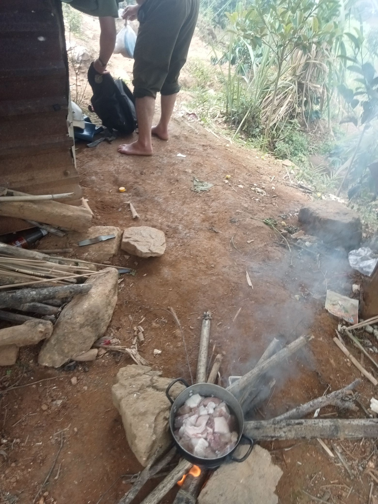
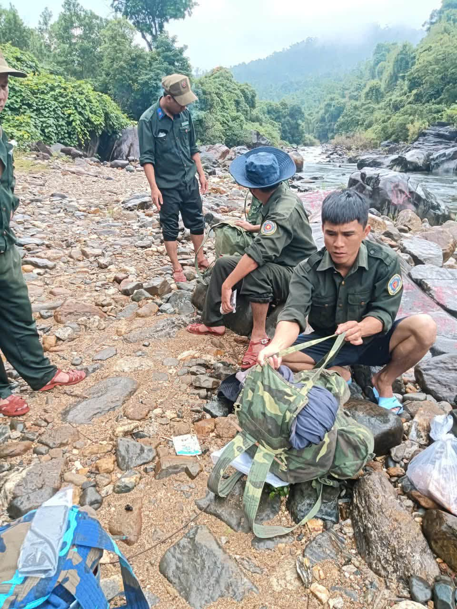
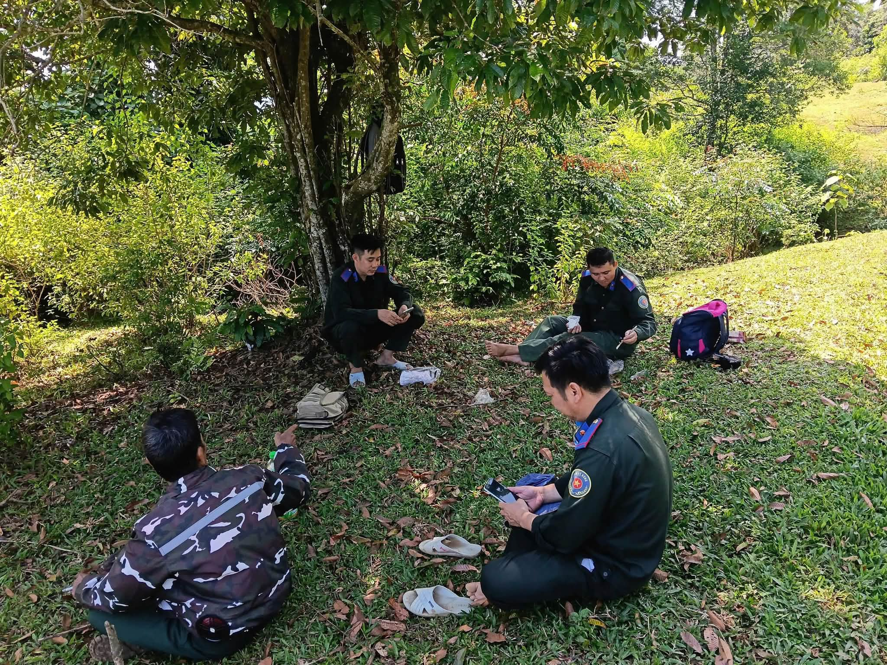
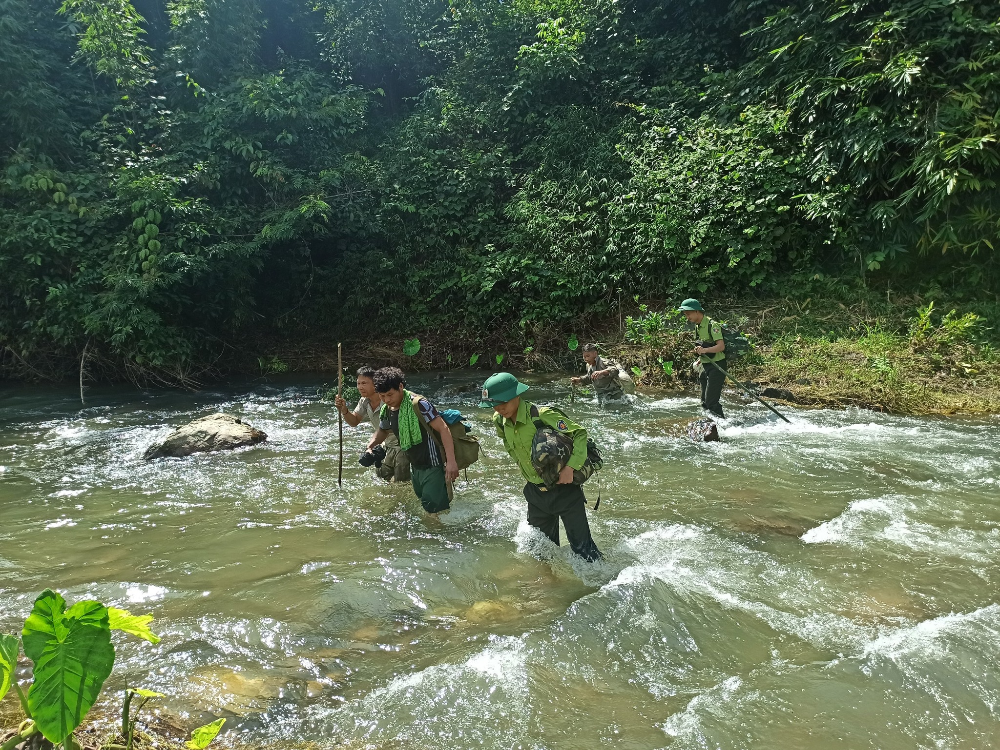
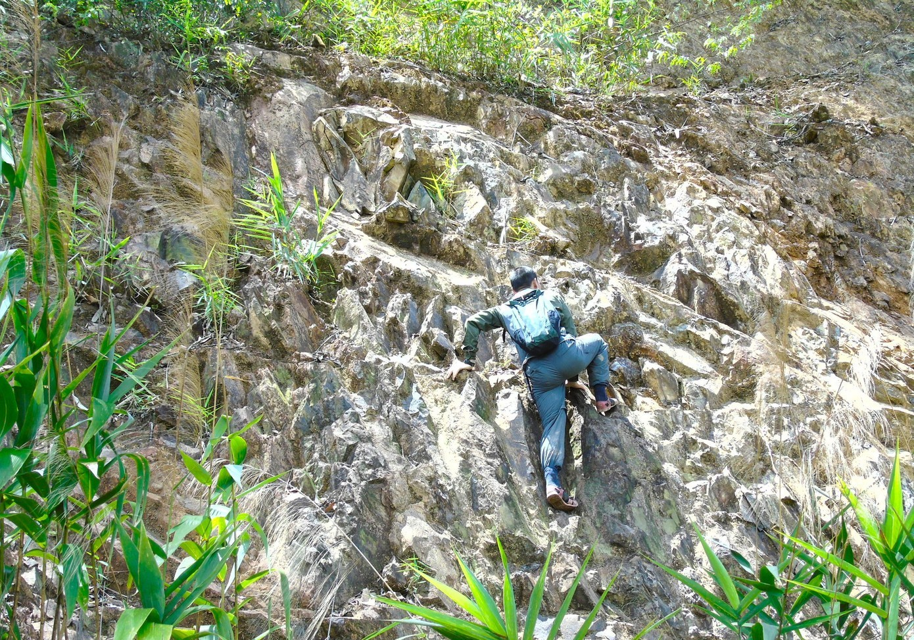
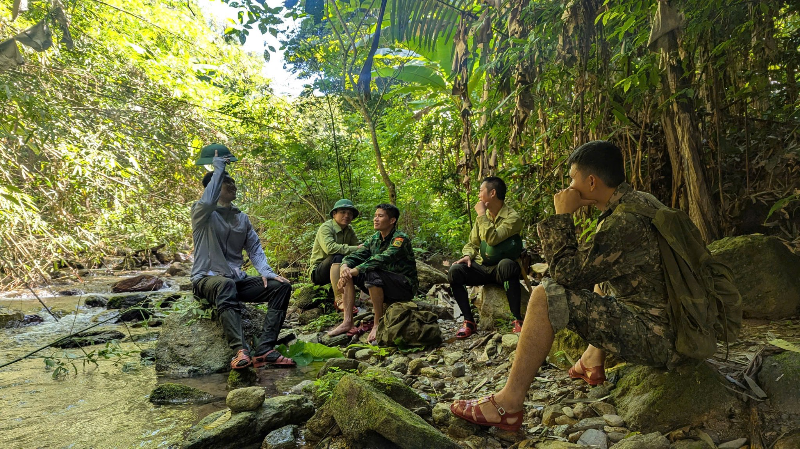
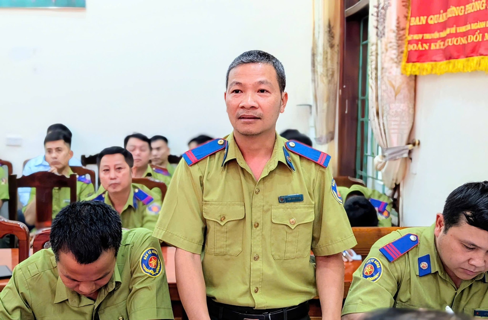
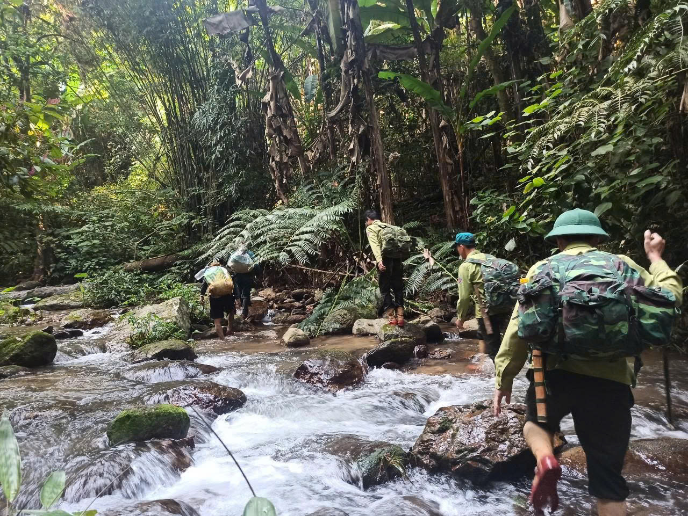
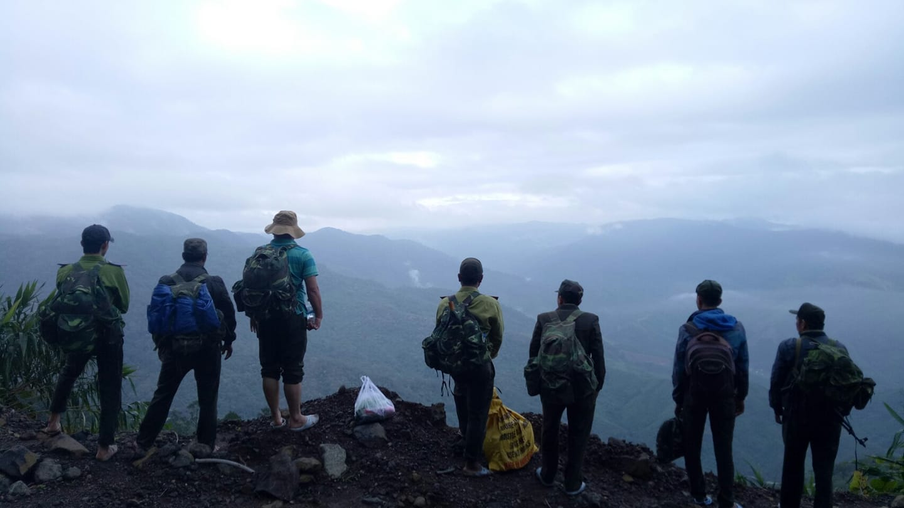

Mòn mỏi đợi chế độ giữa rừng sâu: Khi Nghị định 42/2026/NĐ-CP đã ban hành nhưng dạ dày người giữ rừng vẫn quặn thắt
Giữa trập trùng đại ngàn biên giới, nơi rừng già giáp ranh đất bạn Lào, có một lực lượng ngày đêm bám trụ rừng sâu: Lực lượng chuyên trách bảo vệ rừng của các Ban quản lý rừng phòng hộ, rừng đặc dụng và các công ty lâm nghiệp.
Không có trụ sở khang trang, không có chế độ công chức, hành trang của họ là những chiếc lán bạt chênh vênh bên sườn đá, ba lô trĩu nặng lương khô và chiếc gậy luồn rừng mòn vẹt. Họ là bức tường thành đầu tiên và kiên trung nhất bảo vệ màu xanh Tổ quốc.
1. Bữa cơm cắm lán và những đêm lạnh thấu xương nơi rừng già
Mưa rừng miền Tây trút xuống như thác đổ. Trong căn lán tạm che bằng mấy tấm bạt rách giữa lưng chừng dốc núi, 4 cán bộ thuộc Trạm quản lý bảo vệ rừng nhóm bếp củi ướt khói cay xè mắt. Bữa tối của họ sau hơn 20 cây số luồn rừng chỉ vỏn vẹn nồi cơm độn, một gói mì tôm nấu với rau tàu bay hái vội và ít cá khô mặn chát mang theo từ đầu tuần.
Mỗi chuyến tuần rừng kéo dài từ 3 đến 7 ngày. Họ gùi trên lưng 20 kilôgam quân tư trang, vượt qua những con dốc dựng đứng trơn trượt, đối mặt với vắt, muỗi sốt rét, lũ quét bất ngờ và những đêm ngủ lạnh thấu xương giữa rừng già. Đôi giày vải phát hàng năm chỉ đi được 2 tháng là rách toạc đế vì đá tai mèo sắc nhọn.


"Đói lạnh thì chịu quen rồi, nhưng đau nhất là khi con ốm ở quê gọi điện lên trạm xin tiền đi viện mà tài khoản bố chỉ còn vài trăm nghìn đồng tiền lương ứng trước..."

2. Ngâm mình dòng nước xiết & lằn ranh sinh tử đối đầu "lâm tặc"
Họ là những người trực tiếp chạm trán đầu tiên với các đối tượng phá rừng, săn bắt động vật hoang dã. Lâm tặc ngày nay liều lĩnh, mang theo cưa xăng công suất lớn, dao phát, thậm chí súng tự chế sẵn sàng chống trả quyết liệt khi bị phát hiện. Đã có biết bao cán bộ bảo vệ rừng bị thương tật vĩnh viễn, thậm chí hy sinh thân mình khi làm nhiệm vụ.
Trong khi đối phương hung hãn, lực lượng chuyên trách bảo vệ rừng lại có công cụ hỗ trợ hạn chế, quyền hạn yếu, không có phụ cấp công vụ, thẩm quyền xử lý trước đây gần như chỉ dừng ở việc "nhắc nhở, lập biên bản ghi nhận và báo cáo".


3. Ánh sáng hy vọng từ Nghị định 42/2026/NĐ-CP
Nhiệm vụ nặng nề và hiểm nguy là thế, nhưng mức thu nhập suốt nhiều năm qua của lực lượng bảo vệ rừng chuyên trách chỉ lẹt đẹt 4 đến 6 triệu đồng một tháng. Chính vì vậy, khi Chính phủ ban hành Nghị định số 42/2026/NĐ-CP (ngày 26/01/2026), sửa đổi bổ sung Nghị định số 01/2019/NĐ-CP, hàng vạn người giữ rừng đã vỡ òa trong xúc động.
Nghị định 42 mang đến hai bước đột phá lịch sử: Sửa đổi Điều 14 trao quyền hạn thực thi pháp luật (lập biên bản vi phạm hành chính, tạm giữ tang vật phương tiện); và Sửa đổi Điều 16 cởi trói chế độ đãi ngộ: được hưởng chế độ lương, phụ cấp ưu đãi nghề và thâm niên như Kiểm lâm.

4. Nghịch lý "Chính sách treo": Vì sao chưa đơn vị nào triển khai?
Thế nhưng, từ trang văn bản đến thực tế cuộc sống là khoảng cách mênh mông đầy trớ trêu. Đến thời điểm này, vẫn chưa có bất kỳ đơn vị nào áp dụng chi trả được chế độ phụ cấp mới cho cán bộ nhân viên.
Nguyên nhân nghẽn lại ở 3 nút thắt lớn: Thứ nhất, chưa có Thông tư liên tịch giữa Bộ Nông nghiệp và Phát triển nông thôn, Bộ Tài chính, Bộ Nội vụ hướng dẫn ngạch bậc và xếp loại phụ cấp. Thứ hai, các Ban quản lý rừng tự chủ nguồn thu dịch vụ môi trường rừng sụt giảm kiệt quệ, ngân sách địa phương chưa có nguồn cấp bù. Thứ ba, hơn 65% quân số trực tiếp tuần rừng là lao động hợp đồng lại bị bỏ ngoài diện "viên chức" để thụ hưởng.


5. Lời kêu gọi hành động khẩn cấp
Khi niềm hy vọng chuyển thành sự mòn mỏi chờ đợi, làn sóng xin thôi việc đang diễn ra âm thầm nhưng khốc liệt khắp các địa phương. Nhiều kỹ sư lâm nghiệp trẻ đành gạt nước mắt về xuôi làm công nhân, chạy xe ôm công nghệ để kiếm tiền nuôi con.
Rừng xanh là lá phổi của đất nước. Nhưng lá phổi ấy sẽ không thể lành lặn nếu chiếc dạ dày của người giữ rừng vẫn quặn thắt từng ngày. Đã đến lúc chính sách phải bước ra khỏi trang giấy, đến với từng trạm gác chông chênh giữa đại ngàn!

3 KIẾN NGHỊ CẤP BÁCH THÁO GỠ NÚT THẮT NGHỊ ĐỊNH 42:
-
❶
Khẩn cấp ban hành Thông tư liên tịch: Bộ Nông nghiệp và Phát triển nông thôn phối hợp Bộ Nội vụ, Bộ Tài chính ban hành hướng dẫn chi tiết về xếp ngạch bậc, chức danh và thủ tục thanh quyết toán chế độ phụ cấp ưu đãi nghề.
-
❷
Bố trí kinh phí từ Ngân sách Nhà nước: Nhà nước cấp bổ sung có mục tiêu nguồn ngân sách chi trả phụ cấp cho các đơn vị bảo vệ rừng có nguồn thu thấp, không khoán trắng tài chính cho các đơn vị tự chủ còn nhiều khó khăn.
-
❸
Mở rộng cơ chế cho lực lượng hợp đồng: Xây dựng khung chính sách bảo đảm quyền lợi phụ cấp tương xứng cho lực lượng hợp đồng lao động đang trực tiếp tuần rừng ngày đêm.